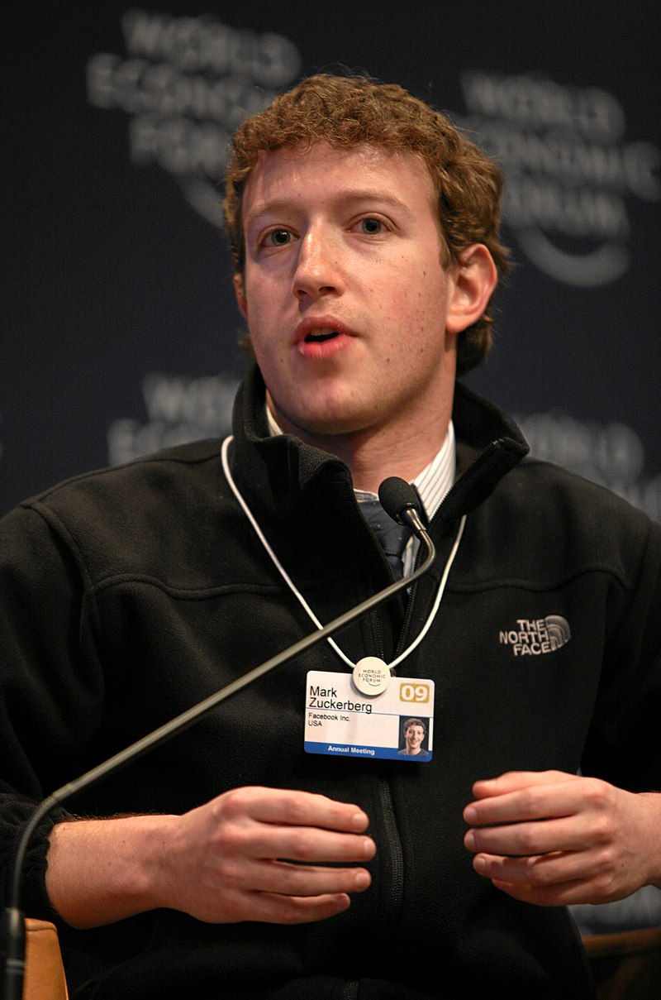

|

|
Марк родился 14 мая 1984 года в городе Уайт-Плейнс (штат Нью-Йорк), что в нескольких километрах к северу от города Нью-Йорка, в еврейской семье. Отец — стоматолог Эдвард Цукерберг (по состоянию на 2012 год продолжал практику). Мать — психиатр Карен Цукерберг. Его бабушки и дедушки были из Германии, Австрии и Польши. Был вторым ребёнком и единственным мальчиком из 4 детей в семье; его сёстры — Рэнди (старшая), Донна и Ариэль.
В школьные годы Марк занимался компьютерным программированием и разработал сетевую версию игры «Риск»[7].
Высшее образование Марк Цукерберг не завершил: в 2002 году он поступил в Гарвардский университет, где до 2004 года обучался на факультете психологии. Параллельно с этим Марк посещал курсы ИТ. Свою сферу интересов указывал как «C, C++, Java, Visual Basic, VBscript, JavaScript, PHP и ASP»[8]. Цукерберг неоднократно характеризовал себя как хакера по призванию[9]. Ещё в колледже на Марка обратили внимание сотрудники Microsoft, после того как он написал программу Synapse, которая позволяла компьютеру самостоятельно составлять последовательность музыкальных хитов для своего владельца[10].
Вместе с Крисом Хьюзом и Дастином Московицем начал создавать социальную сеть Facebook[11]. Финансовую помощь ему оказывал студент бразильского происхождения Эдуардо Саверин. Его попытки отстранить Саверина от управления компанией в 2005 году стали предметом судебного разбирательства.
В январе 2009 года в Пало-Альто познакомился с Юрием Мильнером[12]. 26 мая 2009 года было подписано соглашение, по которому DST за 200 млн долларов купила 1,96 % акций Facebook[12].
Facebook — Ad-tech London 2010
В 2010 году журнал Time назвал Цукерберга человеком года[13].
8 декабря 2010 года Марк Цукерберг объявил, что присоединился к «Клятве дарения», филантропической кампании миллиардеров Уоррена Баффетта и Билла Гейтса[10][14].
Летом 2016 года встретился с папой римским Франциском[15].
В апреле 2018 года дал показания в Конгрессе США в связи со скандалом с Cambridge Analytica[16].
|